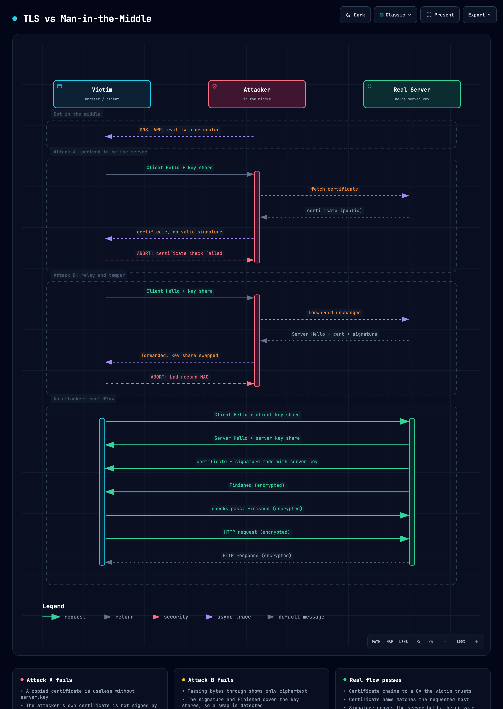

Man-in-the-middle test results
What happens when an attacker sits between a TLS client and the real server, tested against server.js with mitm.js.
How to run it
npm run server # terminal 1
npm run mitm # terminal 2 (add -- --verbose for every detail)The script plays three roles: the victim (a normal client that checks certificates), the attacker, and the real server (server.js). The victim sends a login request containing password=hunter2, and the attacker's goal is to read it.
How the attacker gets into the middle
Before any attack, the victim's traffic goes victim → router → server. Each method below changes one part of the victim's network so the traffic reaches the attacker instead.
| Method | What changes | Path after the change |
|---|---|---|
| DNS spoofing | The DNS answer for the server's name points to the attacker's IP | victim → router → attacker |
| ARP spoofing | The victim's ARP cache says the router's IP belongs to the attacker's network card | victim → attacker → server |
| Evil twin Wi-Fi | The victim joins the attacker's access point, which has the same name as the real one | victim → attacker's access point → router → server |
| Compromised router | The attacker controls the router the victim uses | victim → router (attacker's) → server |
These four methods are simulated. The script keeps a small model of the victim's network and each method changes one part of it. If the attacker ends up in the path, the victim's connection goes to the attacker's port on the same machine. No packets go to any real network, router or device.
From that point on everything is real: TLS servers, relays, certificates and tampering, over real sockets on localhost.
The attacks
Each attack is run once through every method above.
| # | What the attacker tries | What happened | Why it failed |
|---|---|---|---|
| 1 | Sends the real server's certificate as their own | blocked The certificate was easy to get, but it can't be used with the attacker's key ( key values mismatch) |
The server must sign the handshake with server.key, which the attacker doesn't have |
| 2 | Their own self-signed certificate for localhost |
blockedDEPTH_ZERO_SELF_SIGNED_CERT |
Anyone can write "localhost" in a certificate; no trusted CA signed this one |
| 3 | A localhost certificate signed by their own CA |
blockedSELF_SIGNED_CERT_IN_CHAIN |
The attacker's CA is not in the victim's trusted list |
| 4 | A trusted certificate, but for evil.example |
blockedERR_TLS_CERT_ALTNAME_INVALID |
The certificate's name must match the host the victim asked for |
| 5 | Relays everything untouched and records it | blocked About 5,000 bytes captured, with no password and no readable HTTP |
The shared key is computed from private keys that never cross the network |
| 6 | Relays, but swaps the server's key share | blocked Victim aborts: bad record mac |
Handshake messages are protected by keys derived from the key shares, and the signature covers them |
| 7 | Relays, but flips one bit in the encrypted request | blocked Server rejects the record and closes the connection |
Every record carries an authentication tag made with the session key |
| 8 | Replays the session recorded in case 5 | blocked Server sends different random values, then drops the connection |
Every connection gets new keys, so the old records no longer decrypt |
| 9 | Answers in plain HTTP instead of TLS | blockedERR_SSL_WRONG_VERSION_NUMBER |
The victim expects a TLS Server Hello, and only sends the request after a successful handshake |
| 10 | Same as case 2, but the victim uses rejectUnauthorized: false |
succeeded Attacker reads password=hunter2; the victim notices nothing |
Encryption worked, but with the attacker. TLS only stops a man in the middle if the client checks who it is talking to |
In cases 2, 3, 4 and 9 the password is never even sent, because the victim only sends its request after the certificate checks pass.
Results: every attack through every method
| Attack | DNS | ARP | Evil twin | Router |
|---|---|---|---|---|
| 1. Reuse real certificate | blocked | blocked | blocked | blocked |
| 2. Self-signed certificate | blocked | blocked | blocked | blocked |
| 3. Own CA | blocked | blocked | blocked | blocked |
| 4. Wrong domain | blocked | blocked | blocked | blocked |
| 5. Eavesdrop | blocked | blocked | blocked | blocked |
| 6. Swap key share | blocked | blocked | blocked | blocked |
| 7. Modify data | blocked | blocked | blocked | blocked |
| 8. Replay | blocked | blocked | blocked | blocked |
| 9. Strip TLS | blocked | blocked | blocked | blocked |
| 10. No verification | succeeded | succeeded | succeeded | succeeded |
| 11. Real client and real server | secure connection established HTTP/1.1 200 OK | |||
Every row is the same in all four columns. Getting into the middle only decides where the victim's packets go. TLS never looks at IP or MAC addresses, only at the certificate and the signature, so the method doesn't matter.
The only attack that works is case 10, and it is the only case where the victim's settings change. Never switch off certificate verification (rejectUnauthorized: false) outside a test.
Why the real connection passes
In case 11 the victim checks three things, and the real server passes all of them:
| Check | Real server | Attacker |
|---|---|---|
| Certificate chains to a CA the victim trusts | yes | Only by copying the real certificate (case 1) |
| Certificate name matches the requested host | yes | Only by copying the real certificate (case 1) |
| Handshake is signed with the certificate's private key | yes, it holds server.key | no, which is why case 1 fails |
Flow
